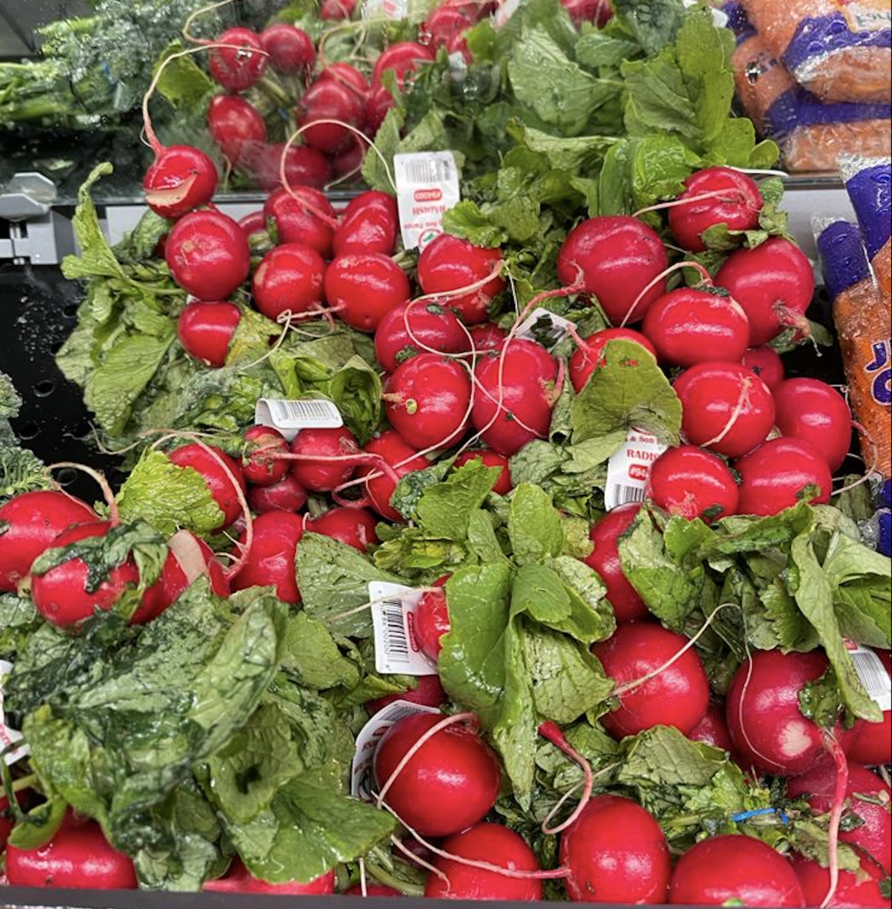

 Are you confused about what kind of foods that are good or bad for your health?. Please avoid sugar that has refined carbs in your diet.By visiting our advice section that has accurate and well researched health information on which you can totally rely on, that includes resources that can be downloaded. We can give you feasible answers to your important questions on food and health. Subscribing to Healthy Diet makes it easy and enjoyable to eat well and feel great. It’s easy to wonder which foods are healthiest. I can suggest you a vast number of foods are both healthy and tasty. Taking care of yourself is productive too. There are many ways to achieve this, and different approaches work for different people.
Today is another day to get back on track.There are different ways to achieve this , and different approaches work for different people if you follow a balanced diet. "Changes to healthier eating should be practical, enjoyable and sustainable, not restrictive and unsociable".The recipes section that I have posted is full of delicious, nutrition packed dishes with affordable ingredients and which is very easy to prepare.
The immune system is precisely that a system, not a single entity. To function well it requires balance and harmony. Click here to know how you can strengthen this system by few additions to your lifestyles.At Healthy Food Guide you will find accurate, science-based advice and information about healthy eating.